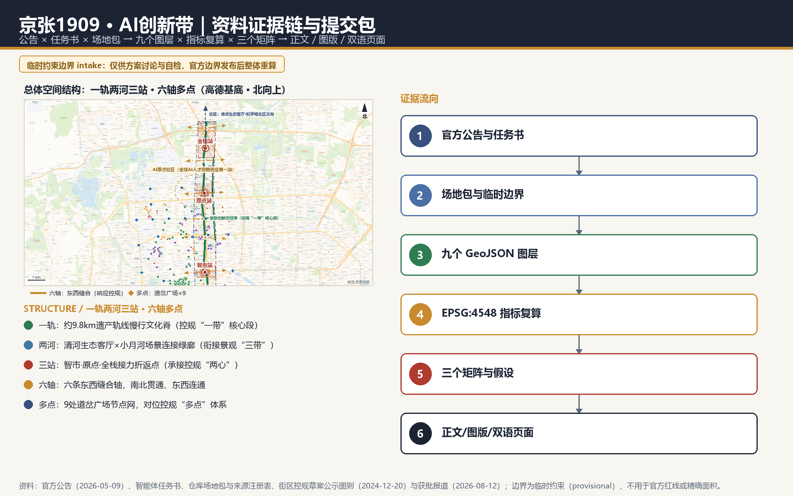
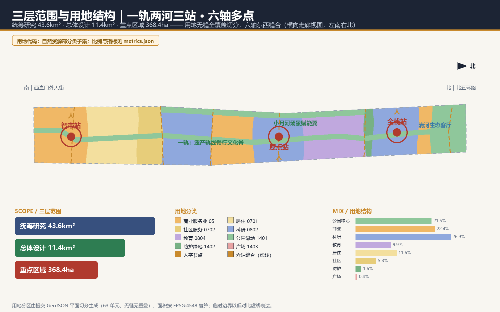
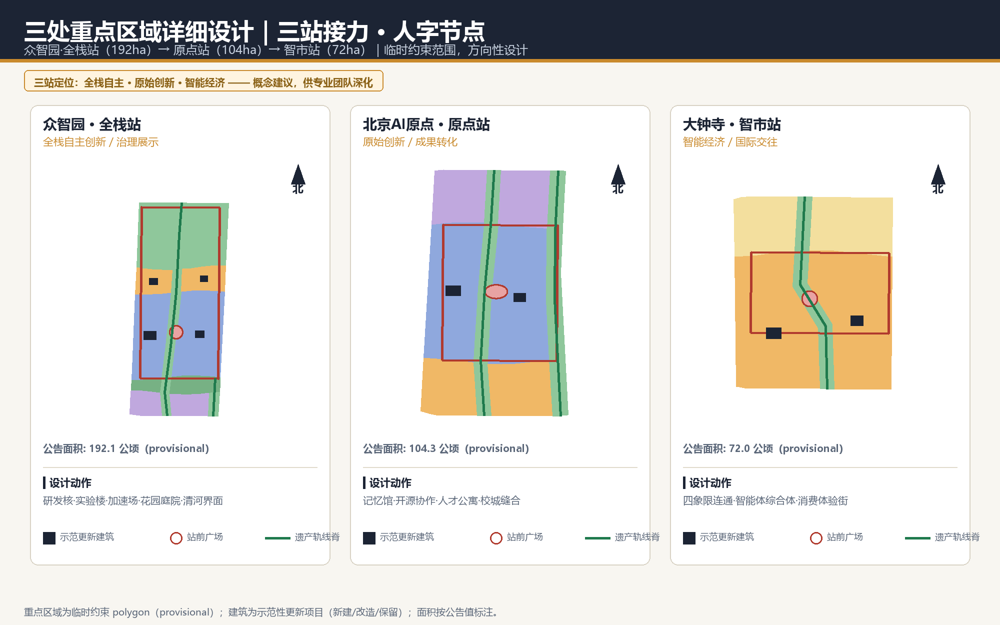
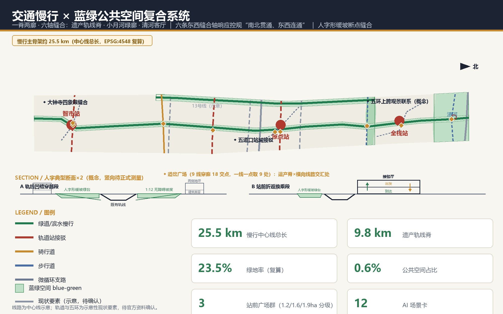
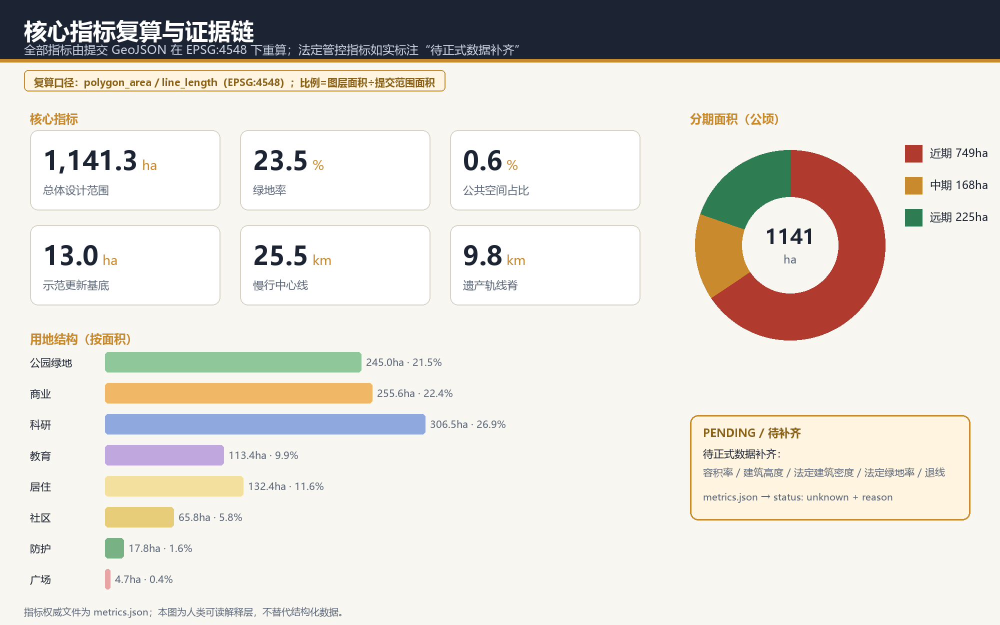

京张1909 · AI创新带：人字新轨——从争气路到智汇路的百年接力
1909年，詹天佑以青龙桥人字形折返线路打破“中国人不能自建铁路”的论断——以线换高、以巧破题，是技术主权原点；2026年，AI创新带要回答智能时代的城市如何组织——从铁路主权到智能主权，是下一个百年的城市范式原点。方案以“人字新轨”为母题并立出三重内涵：一撇 AI 赋能产业、一捺 AI 赋能空间、人字交点立在以人为本；把折返（switchback）立为空间句法主干：朝圣路线是一次大折返，三站是接力折返点，接驳厅是折返换乘，道岔广场是方向选择；约11.4平方公里临时总体设计范围组织为“一轨两河三站、三区两翼人字两笔、六轴多点缝合”的格局，与获批街区控规“一带一轴、两心多点”结构性衔接，五道口·原点站承接北京AI原点社区“创新策源、创业首选”定位（全球AI人才创新创业“第一站”）。全部空间指标可由提交GeoJSON在EPSG:4548下复算，全部法定控制条件如实标注为待正式数据补齐。
京张1909 · AI创新带：人字新轨——从争气路到智汇路的百年接力
主口号：1909，以人字形破题；2026，以“人”字形立带。 Slogan: 1909 — the switchback broke the doubt; 2026 — the human shapes the belt. 副口号：撇捺写“人”，智赋产城——产业向新，空间向活，城市向人。 Sub-slogan: two strokes spell the human; intelligence empowers industry and place.
设计依据与资料清单
本方案是面向“百年京张AI创新带城市设计国际方案征集”的 AI 智能体正式投稿，第一依据是北京市规划和自然资源委员会海淀分局发布的资格预审公告：三层范围、三处重点区域、设计任务与成果深度均按公告 1.3、1.4、1.5 组织 来源 标准。面向智能体的开源征集任务书提供了十条共创原则、三大定位、五大功能、三区两翼与六项必答任务，本方案逐条响应并写入正文 来源。
资料使用边界已在来源登记层区分：公告与任务书可作为正式任务依据；仓库登记的临时范围线仅用于方案生成、可视化与临时自检；控规指标、道路红线、权属、市政与文保控制线目前均无公开正式文件，全部标注为待正式数据补齐 来源。本方案采用仓库维护者登记的临时粗略边界作为设计底图，其按公告文字四至与公告面积在 EPSG:4548 下校核，面积复算结果与公告约 11.4 平方公里一致 空间数据 指标。
街区控规衔接依据（v1.5 新增）：《北京海淀区京张铁路遗址公园沿线（人工智能创新街区重点地区）HD00-1601等街区控制性详细规划（街区层面）（2022-2035年）（草案）》已于 2024-12-20 由北京市规划和自然资源委员会海淀分局公示图则，并于 2026-08-11 获批复（2024—2035 年版，据北京日报 2026-08-12 报道）：范围东至新街口外大街、西至中关村大街、北至成府路、南至西直门外大街，共 9 个街区约 1668.2 公顷，空间结构为“一带一轴、两心多点”，以绿色公共空间建设引领区域城市更新 来源 来源。本案总体设计范围位于该“一带”（京张铁路遗址公园创新交往带）核心段，v1.5 起按公示图则做结构性衔接：空间结构、产业方向、慢行与蓝绿骨架均与控规对位（对照表见总体设计章）；但公示图则与获批报道均为图示/新闻层级材料，精确管控图则与红线全文尚未公开取得，法定管控指标维持 unknown 标注不变（assumptions A-CONTROLS-002）。
区级创新街区衔接（v1.6 新增）：北京AI原点社区已纳入北京市首批人工智能创新街区，北京市正打造以海淀为核心的“一核多点”布局 来源。该社区以东升大厦为中心、约 3 平方公里，立足“创新策源、创业首选”特色定位，目标是打造“全球AI人才创新创业第一站”：东升产业空间已集聚人工智能领域企业 300 多家、占比超过七成；1 公里半径范围内聚集 30 多所高校和科研机构、超过 1000 位 AI 科学家、1.3 万名开发者与 10 万名相关专业学子；以“原点学堂”（免费工位与全生命周期创业服务）、大模型生态服务站（一站式解决“找政策、找资金、找算力、找人才、找伙伴、找智力、找空间、找场景”八大核心问题）与“15分钟活力生活圈”（人才公寓、优质学校配建）组织创新生态，并逐步打破校区、园区与社区的边界。本案五道口·原点站即该社区的空间承接与轨道门户：“校区—园区—街区”慢行缝合对应社区“打破三区边界”的融合路径；“原点会客厅+记忆馆”转译清华园站记忆、开源协作中心与 AI 人才公寓的功能策划，与“八找”全要素服务和人才安居配套相呼应——把“第一站”的到达体验立在人字交点上。
专业标准响应覆盖城市设计管理办法、控规编制审批办法与国土空间用地用海分类指南三项强制标准，用地代码全部采用场地包登记的分类子集，不自造分类 标准。完整的来源、指标、标准、深度与任务覆盖机器索引分别保存在 sources.json、metrics.json、standard_matrix.json、design_depth_matrix.json 与 compliance_matrix.json，正文只保留与判断相邻的证据锚点。
本方案的方法立场：AI 智能体做城市设计，最诚实也最专业的贡献是“可复算”。所有面积、比例、长度、数量均从提交的九个 GeoJSON 图层在 EPSG:4548（CGCS2000 三度带，中央经线 117°E，适用于北京地区）下重新计算，不引用任何无法复核的数值 深度。

三层范围工作框架
方案按公告确定的三层递进组织。统筹研究范围约 43.6 平方公里，承载“三区两翼”产业生态与战略判断；总体设计范围约 11.4 平方公里，是本方案空间落图与指标复算的主战场；重点区域范围约 368.4 公顷，覆盖众智园、原点社区、大钟寺三处片区 深度。
三层范围的边界目前均为临时约束范围（provisional constraint）：仓库尚未取得官方精确红线，本方案使用维护者登记的临时 polygon 并如实标注，不将其作为官方红线、审批依据或精确面积依据 空间数据。待官方边界发布后，用地、建筑、道路、绿地、公共空间、分期六个设计图层与全部面积类指标需要整体重算，这一触发条件已登记在 assumptions.json。
深度声明（v1.4 修正）：鉴于边界与控规条件全部待正式数据补齐，本方案总体设计层与重点区域层均如实降为概念性城市设计深度（方向级）——给出空间结构、用地切分、项目落位与可复算指标，不输出平面图则、高度分区与法定口径结论。这比虚高的深度声明更符合本方案“可复算、不伪装”的立场 标准。（正文章节栏目名为官方模板固定要求，深度以本声明为准。）
在空间结构上，三层不是三张孤立的图：统筹研究层回答“一带为什么成立”，总体设计层把产业与更新判断落为可复算的用地与项目，重点区域层验证三处站区的可实施性 深度。
| 层级 | 公告面积 | 本层回答的核心问题 | 深度声明（如实） |
|---|---|---|---|
| 统筹研究范围 | 约43.6平方公里 | AI创新生态如何组织、三区两翼如何协同 | 战略与结构研究 |
| 总体设计范围 | 约11.4平方公里 | 更新结构、用地、项目、设施如何落图 | 概念性城市设计深度（方向级） |
| 重点区域范围 | 约368.4公顷 | 三处站区如何实施 | 概念性城市设计深度（方向级）+ 实施路径建议 |

统筹研究范围产业与未来城市研究
统筹研究层的核心判断：海淀这条走廊的独特性不在于“有 AI 企业”，而在于它是中国工程自主创新精神的地理原点——1909 年詹天佑主持建成的京张铁路是中国人自行勘测设计的第一条干线铁路，五道口—中关村则是中国互联网与人工智能产业的策源地。本方案据此提出一带总体概念：京张1909 · AI创新带（JZ-1909 AI Belt），设计母题为“人字新轨”——从“争气路”到“智汇路”的百年接力，命名体系、视觉识别与 Logo 方向均由此展开（详见蓝绿空间与风貌章 agent.1 响应） 来源。
母题正本：人字形的功能本质是“折返”（switchback）。1909 年青龙桥的人字形线路不是分岔符号，而是折返智慧：列车在八达岭段大坡度上以之字形折返爬升，“以线换高”——不靠更大功率的蛮力，而靠几何的巧劲。本方案 v1.4 把“折返”立为空间句法主干，与“百年接力”互为表里，使母题与空间强耦合：
- 朝圣路线 = 一次大折返：1909 年的线路向南（争气路），2026 年的智慧向北（智汇路）；1909 朝圣路线在每座道岔广场完成一次“折返”——方向在此被重新选择，三站就是接力折返点。“接力”从修辞变成空间行为。
- 接驳厅 = 折返换乘：到达与出发的流线在接驳厅内折返交织，直接对应人字形岔道的行车组织。
- 道岔广场 = 方向选择：每一座道岔广场把“选哪条路”的决定权交还给人——这是折返在智能时代的现代转译：技术给出选项，选择权在人。
主题扩容（v1.5）：人字三重立义——母题不止于“人”字的形。 街区控规提出“具有国际影响的创新智汇城区、绿色生态引领的更新标杆城区、人文活力共享的宜居花园城区”三大定位，并明确以绿色公共空间建设引领区域城市更新、发展大模型/智能体/具身智能等新业态 来源 来源。本方案把官方定位转译进“人”字的两笔一交点，使母题从形态符号升级为价值框架：
- 一撇 = AI 赋能产业（对应创新智汇城区）：以存量更新挖潜承接新业态——控规明确通过老旧厂房改造、低效楼宇更新发展大模型、智能体、具身智能，知春路北侧北京卫星制造厂科技园已从老厂房变身新园区、集聚微芯区块链与边缘计算研究院等机构，正是“改造优先于新建”的官方例证；本案三站接力回路（原点研发—学院路中试—大钟寺规模应用—众智园全栈自主）与两翼服务注入，即领军企业牵引、上下游集聚的空间化。
- 一捺 = AI 赋能空间（对应绿色生态引领的更新标杆）：空间本身成为智能的载体——AI 原生空间机制四条（分时街道、数据反哺闭环、人机共处动线、算力驿站网络）把遗产公园脊与两河绿廊升级为“可迭代、可回退”的智慧公共空间，以绿带建设引领区域城市更新。
- 交点 = 以人为本（对应人文活力共享的宜居花园城区）：两笔交汇之处是人——产业与空间最终服务于人的日常。控规要求构建生活圈与创新圈融合的一刻钟社区服务圈、在公园绿地融入体育游憩便民服务（公园二期林下剧场、儿童游乐区、球类运动场已先行示范）；本案以六类用户画像、全龄友好断面与保留人工通道的承诺落实“技术越强大，人越要在场”。
1909 年的历史意义：在“中国人不能自建铁路”的论断中，詹天佑以人字形折返破题，“争气路”的本质是人的智慧主权。2026 年的未来意义：AI 创新带是智能时代的原点工程——从铁路主权到智能主权（全栈自主创新），从人员物资的流动到数据智能的流动；它要回答的不是“海淀有没有 AI 企业”，而是“AI 时代的城市如何组织”。设计方法论：人字形的以巧破题就是本方案的方法，并升格为覆盖叙事、空间、方法三层的完整主题——叙事层：从争气路到智汇路的百年接力；空间层：折返句法（大折返朝圣路线、折返换乘接驳厅、方向选择道岔广场）；方法层：以巧破题=不蛮干（不大拆大建）、可复算=不伪装（全部指标 EPSG:4548 复核）、可回退=不冒险（低扰动、可分期、可逆）。在 AI 创新带的头上写一个“人”字：技术越强大，人越要在场。
格局层转译：把“三区两翼”画进“人”字的两笔。任务书给定的两翼恰好是人字的两笔：中关村科技服务翼为西笔，小月河场景赋能翼为东笔，两翼在五道口—原点一带分岔，分别伸向中关村（西）与小月河（东），向北汇合于众智园——一轨（遗产轨线脊）为干，三站（大钟寺、原点、全栈）是笔画上的接力节点。符号逻辑全线统一：人字交点朝南迎来路，两笔向北张开——面向清河敞开，就是向未来敞开；三站站前广场的“人字交点”与众智园“向北张开的人字”由此共用同一姿态 标准。
产业生态上，方案把“三大定位、五大功能、三区两翼”组织为一个接力回路：众智园承载全栈自主创新与治理话语权，原点社区承载原始创新与成果转化，大钟寺承载智能经济与国际交往，中关村科技服务翼注入资本与知识产权服务，小月河场景赋能翼提供城市级试验场。这一回路的实质是“基础研究—中试转化—规模应用—全球传播”的创新链在空间上的连续化（生态图谱见附图 assets/figures/ecosystem-map.png）。
全球经验比照（背景研究，非官方数据 来源），七案成表：
| 案例 | 关键机制 | 对一带的转译 |
|---|---|---|
| 匹兹堡（钢铁→机器人走廊） | 大学锚点+存量厂房 | 高校成果沿轨线脊就地转化，改造优先于新建 |
| 伦敦国王十字知识街区 | 轨道枢纽×高校×总部×公共空间复合 | 三站按“枢纽+校区+展示”复合组织 |
| 斯德哥尔摩 Kista | ICT 集群需要生活服务留人 | 人才公寓、社区服务与研发同步供给 |
| 波士顿 Kendall Square | 校区—园区界面是首要创新界面 | 校城慢行缝合列为独立更新项目（JZ1909-06） |
| 深圳南山 | 政策性空间供给+场景开放 | 场景卡 07/08/10 以“申请—评估—公示—复核”开放 |
| 杭州城西科创大走廊 | 廊道需要轨道与蓝绿双骨架 | 遗产轨线脊+两河构成双骨架 |
| 慕尼黑 Werksviertel | 旧工业区文化再生形成城市目的地 | 工业遗存材质与线路肌理进入风貌基调 |
七项经验的共同启示：创新带首先是日常生活带，其次才是产业带。本方案将其转译为慢行、公共空间、人才服务与场景开放四类空间机制。
未来城市形态方面，方案判断 AI 对城市的首要改变不是“无人化”，而是空间使用的高频化、混合化与可验证化：研发、展示、交往、居住在同一条走廊上以更小颗粒度混合，城市服务以可解释、可复核的方式嵌入公共空间。所有空间落地表述均为概念建议，可供专业团队深化研究，不构成法定规划结论。
总体设计范围城市更新与控规深度城市设计
总体设计层把 11.4 平方公里的临时范围组织为“一轨两河三站 · 六轴多点”结构 深度（本层实际交付深度为概念性城市设计·方向级，见三层范围工作框架章的深度声明；v1.5 在“一轨两河三站”骨架上加密东西缝合轴网，对接获批街区控规）。这一结构是“人字新轨”母题的格局层转译：一轨为干，三区两翼为人字两笔，三站是连续的三个“接力折返点”——每个站点把到达与出发、展示与参与、机器与人工的流线在站前广场交汇处分清再缝合，并统一采用“交点在南、两笔北展”的人字姿态，让百年前的线路智慧变成今天的空间组织方式；六轴多点则是“人”字两笔向城市东西两侧的延展触手，把公园带与城市片区织为一体。
与获批街区控规及市级创新街区部署的结构性衔接（v1.5 新增、v1.6 增补AI原点社区对位；图则/新闻层级对位，非法定管控依据）：
| 街区控规与市级部署（公示/获批/发布） | 本案响应对位 |
|---|---|
| 一带：京张铁路遗址公园创新交往带 | 本案总体设计范围即该带核心段；“一轨”（遗产轨线脊 9.8 公里）落实其公共空间骨架 指标 |
| 一轴：中关村大街创新发展轴线 | “人”字西笔（中关村科技服务翼）自五道口分岔西向衔接 |
| 两心：大钟寺中心、五道口中心 | 大钟寺·智市站区、五道口·原点站区分别承接，站前广场按中心量级分级 |
| 多点：知春路、四道口等一级节点与多个二级节点 | 六轴缝合中的知春路缝合轴（ROAD-011）直衔知春路一级节点；道岔广场序列 9 处作为带内节点承接 |
| 景观结构“三带六轴、多廊多中心” | “一轨两河”对应京张带与小月河带（清河接东升八家郊野公园方向）；“六轴多点”即六条东西缝合轴与节点网 |
| 北京AI原点社区：“创新策源、创业首选”，全球AI人才创新创业“第一站”（约 3 平方公里，东升大厦为中心） | 五道口·原点站承接其空间锚点与轨道门户：原点会客厅+记忆馆转译清华园站记忆，开源协作中心与 AI 人才公寓呼应“八找”服务与人才安居配套 |
| 北京市首批人工智能创新街区“一核多点”布局（以海淀为核心） | 本案“一轨三站、多点成网”节点体系即“一核”走廊段的空间组织方案 |
| “打破校区、园区与社区的边界”（社区融合路径） | 原点站“校区—园区—街区”慢行缝合即其空间落位（JZ1909-06 校城缝合单元） |
| 绿色公共空间建设引领区域城市更新 | “一捺 AI 赋能空间”：蓝绿骨架叠加智慧公共层，以绿带建设组织更新时序 |
| 全域规模口径：常住约 36.4 万人、城乡建设用地约 1648.1 公顷、建筑规模约 2369.3 万平方米 | 本案 11.4 平方公里临时范围为其核心段；全域法定口径仅作背景引用，本案指标不做数值冒充 |
| 道路网密度约 8.0 公里/平方公里、绿色出行比例 80%（2035） | 本案慢行主骨架（约 25.5 公里中心线）与六轴缝合为其方向性响应，地块级路网密度待正式数据复核 |
一轨：京张遗产轨线慢行文化脊。沿旧京张铁路线位设置约 9.8 公里、宽约 116 米的遗产公园脊，串联三站与全部文化节点，是慢行、文化展示与 AI 场景的复合轴 指标。两河：北端清河滨水生态客厅（GREEN-003 图层声明面积约 83.4 公顷的滨水绿廊界面）与东侧小月河场景连接绿廊（沿场地东边线内缩约 62 米生成，呼应任务书“小月河场景赋能翼”）。名实说明：小月河河道本体在场地之外的学院路/西土城路一线，本绿廊是场地内接驳段，其任务是接驳场景翼与真实河道，跨路衔接段待专项——故定名“场景连接绿廊”，不冒充滨水空间 空间数据。三站：大钟寺·智市站（智能经济与国际交往）、五道口·原点站（原始创新与成果转化）、众智园·全栈站（全栈自主创新与治理展示），每站以站前广场+接驳厅+更新单元组织 空间数据。
六轴（v1.5 新增，响应控规“南北贯通、东西连通”与景观结构“六轴”）：自南向北六条东西缝合轴把遗址公园与城市东西两侧织合——①大钟寺四象限缝合轴（ROAD-003，衔接大钟寺中心）；②学院路—小月河缝合骑行轴（ROAD-005）；③知春路节点缝合轴（ROAD-011，新增，直衔控规“多点”体系中的知春路一级节点）；④五道口—清华东路西口缝合轴（ROAD-004，衔接五道口中心）；⑤五环上跨缝合轴（ROAD-006，概念）；⑥清河滨水缝合轴（ROAD-007，衔接清河滨水绿廊与东升八家郊野公园方向，呼应公园二期三条鱼骨状慢行通道的盘活经验）。多点：遗产脊与 9 条横向线路的 18 处穿廊交点按“一线一点”设 9 处道岔广场（落位规则见交通章），与控规“多点”节点体系内外承接——带内节点做日常交往，城市侧节点（知春路、四道口等）由六轴触达。
三站广场按站区规模分级（v1.4 修正）：智市站前广场约 1.2 公顷（圆形，密路网路口小尺度缝合）、原点站前广场约 1.6 公顷（椭圆，向校区方向舒展）、全栈站前广场约 1.9 公顷（圆形，新街区展示广场）。分级依据为站区规模（72/104/192 公顷）与真实城市路口站前广场量级（0.5—2 公顷）；三站广场面积、形态与顶点数在图层中逐项可核 空间数据。
用地结构按国土空间分类代码完整切分、无缝无重叠全覆盖：科研用地（0802）约 306.5 公顷，其中 4 个单元约 191.6 公顷落在三站重点区内，3 个单元约 114.9 公顷位于站间的学院路科创段走廊（含 1 个不足 0.05 公顷的切分碎屑单元）——“集中三站”指重点区集聚为主体，走廊单元承担校城转化带功能，如实标注不回避 指标；商业服务业用地（05）约 255.6 公顷锚定大钟寺与五道口门户；教育用地（0804）约 113.4 公顷服务校城过渡；居住与社区服务（0701/0702）约 198.2 公顷保障职住平衡；公园绿地与广场（1401/1402/1403）合计约 267.5 公顷。产业功能比例为科研:商业:教育:居住社区≈35:29:13:23（按面积归一化）。
用地结构（愿景层）与更新机制（过程层）的衔接逻辑：用地结构是远期目标愿景，不是即期征地依据。在现状高度建成的走廊（高校、居住、单位大院为主），科研与商业用地的来源机制是存量渐进置换——通过双层更新单元的业态置换、首层引导与微更新逐步实现：第一层三站重点更新单元以站前广场为锚捆绑周边低效空间，明确功能业态与建筑更新方向；第二层沿轨线的场景嵌入式微更新以口袋公园、接驳节点、首层业态置换为主，低扰动、可分期、可回退。凡是现状保留地块，其远期用地属性均标注“现状保留+业态置换”路径（概念建议，供专业团队深化）；19 个示范性更新项目已在建筑图层落位并区分新建/改造/保留三类 空间数据。
建筑总规模、容积率、建筑高度、建筑密度与退线等法定控制指标目前无任何官方依据，本方案不作数值伪装，全部标注为待正式控规条件确认 标准。
重点区域详细设计
三处重点区域按临时 polygon 分别开展详细设计，范围均为临时约束，结论为方向性设计（概念性城市设计深度） 空间数据。现状要素诊断为公开资料推断（agent_inferred，待正式现状调查确认）。
大钟寺·智市站（约72公顷，临时范围）。定位：城市型智能经济与国际交往街区。现状诊断：13 号线与 12 号线换乘枢纽、成熟商圈与大型平交路口叠加，路口尺度大、过街距离长（推断，待核）。空间结构：“一广场、四象限、折返厅”——以约 1.2 公顷站前广场为人字交点（交点在南迎来路，两笔北展接入街区），组织路口四象限步行接驳；接驳厅内到达与出发流线折返交织，对应人字形岔道行车组织。功能布局：智能体服务综合体（新建）、领军企业国际交往中心（改造）、AI原生消费体验街（改造）三个示范建筑沿广场周边布置。关键节点意向：“智市之门”城市门厅，轴线对人字交点（概念形态，供深化）。实施单元建议：①广场与接驳厅单元（JZ1909-02，前置：轨道一体化方案）；②四象限连通单元（JZ1909-01，前置：交通专项、道路红线）；③消费体验街业态置换单元（第二层微更新，前置：产权确认）。风险点：路口交通组织与轨道一体化方案需要正式交通专项支撑，已列入待确认清单 深度。
五道口·原点站（约104公顷，临时范围）。定位：近校型原始创新与成果转化街区。现状诊断：13 号线五道口站与 15 号线清华东路西口站分据南北，清华园站老站房留存，高校界面与平交道口记忆并存（推断，待核）。空间结构：“校区—园区—街区”三区慢行缝合：三条来向在约 1.6 公顷椭圆广场与开源发布广场汇成“人”字——校区带来原始创新、园区承接中试转化、街区供给日常生活，三路合流即“成果转化”的空间定义；椭圆广场向校区方向舒展，向北连接高校、向南连接五道口南门户。功能布局：清华园站记忆转译为“原点会客厅+记忆馆”（改造类示范建筑），配套开源协作中心与 AI 人才公寓（新建）。关键节点意向：原点会客厅——“人字新轨”的叙事起点。实施单元建议：①记忆馆与会客厅单元（JZ1909-03，前置：文保资料、产权确认）；②开源发布广场单元（JZ1909-04，前置：运营主体确定）；③校城缝合单元（JZ1909-06，前置：校区管理协同）。实施上建议低扰动有机更新，避免大拆大建。
众智园·全栈站（约192公顷，临时范围）。定位：花园型全栈自主创新街区。现状诊断：五环与清河夹峙的新建拓展区，现状建设密度低、生态界面好（推断，待核）。空间结构：“清河界面+花园创新”：研发核、安全治理与标准实验楼、自主生态加速场三个新建示范建筑围绕约 1.9 公顷站前广场与花园庭院布置，构成向北张开的“人”字——一翼接清河生态客厅（自然），一翼接加速场与实验楼（技术），广场是二者每日相遇的交点；按全线统一的符号逻辑，此“向北张开”与三站广场“交点在南、两笔北展”同一姿态——面向清河敞开即向未来敞开。功能布局：研发核与实验楼沿广场北翼，加速场与花园庭院沿东翼，展示馆与国际治理交流中心临清河界面。关键节点意向：“全栈之光”花园式展示地标，人字形缓坡绿台与展示体量结合（概念形态，供深化）。实施单元建议：①研发核与实验楼单元（JZ1909-08，中期启动概念先行区、远期全面建成）；②清河界面单元（JZ1909-09，前置：防洪与生态专项）；③五环上跨联系单元（JZ1909-10，前置：工程可行性论证）。对外交通方面，建议结合五环区域一体化规划研究跨五环步行观景联系（概念节点 PUBLIC-005） 空间数据。

AI 创新生态、人才画像与 AI+ 场景
方案把“人”作为 AI 创新带的第一变量，建立六类用户画像，并以场景卡方式把 AI+ 落到空间、数据与运营边界上 标准。
| 用户画像 | 典型需求 | 空间响应 | 治理边界 |
|---|---|---|---|
| 开源开发者 | 发布、协作、声誉沉淀 | 原点站开源发布广场、贡献墙 | 仅聚合统计，不追踪个体轨迹 |
| 初创团队 | 低成本空间、算力入口、试验场 | 众智园加速场、端侧算力驿站 | 算力与数据服务另行授权 |
| 高校师生 | 成果转化、跨校协作 | 成果转化加速器、校城慢行缝合 | 科研成果数据需授权 |
| 头部企业与访客 | 展示、路演、国际交往 | 大钟寺国际路演客厅 | 企业标识与案例须清权 |
| 周边居民 | 通勤、休闲、低扰动更新 | 遗产公园脊、社区服务嵌入 | 不将居民画像用于商业推荐 |
| 国际研究者与游客 | 可理解的朝圣路线 | 1909朝圣路线与多语导览 | 导览内容可解释、可纠错 |
AI 原生空间机制（anti-AI-washing 显性组成，v1.4 新增）：AI 不只落在场景卡与运营层，也落在空间模型本身——
1. 时间维度的分时街道与弹性界面：站前广场与原点社区内街按时段切换通行、市集、测试三种模式（对应场景卡 03/04），铺装与家具按可重构设计，空间权属与时段规则在导视中公开可查。 2. 场景数据反哺空间调整的闭环：低侵入传感聚合数据→评估慢行断点与拥挤节点→生成微更新建议→人工复核→实施→再评估；空间进入“可迭代”状态，每次调整保留版本与理由（可回退）。 3. 人机共处动线规范：低速配送与服务机器人限定路线、限速与停靠点，与行人动线在交叉口分行、在广场设让行规则（对应场景卡 04），规范以铺装语言落地，不依赖额外标识杆件。 4. 算力驿站作为公共设施层的网络化布局：端侧算力驿站按三站公共服务点+廊道节点成网布局（对应场景卡 08），与分布式能源、直饮水、无障碍设施并置，作为新型市政公共设施层管理。
场景体系共 12 张场景卡，其中 3 张为 AI 产业测试验证场景（编号 07、08、10），每张卡映射空间载体、数据来源、隐私边界与人工复核机制；场景登记引用仓库场景注册表，未经核实的技术能力不写成可全面部署 深度。面向公众的生成式场景（02 企业服务 Copilot、05 AI 文化导览）按《生成式人工智能服务管理暂行办法》第 2 条界定的适用范围设计合规边界：投诉举报按第 15 条预留及时处理渠道，但不虚构法定数字响应期限；安全评估与备案义务仅对应具有舆论属性或社会动员能力的服务，不泛化到全部场景 标准。
场景—空间—运营矩阵（agent.3 响应，运营列 v1.4 补齐，全部为概念建议）：
| 场景卡 | 空间载体 | 卡片摘要 | 运营主体（建议） | 数据与资金来源 | 回退条件 |
|---|---|---|---|---|---|
| 01 AI慢行导航 | 遗产轨线脊全线 | 可解释导视与低侵入传感识别断点与拥挤节点，输出人工可复核建议 | 街区运营方+市政养护 | 市政公开数据+聚合传感数据 | 退回静态标识导视 |
| 02 企业服务Copilot | 三站服务驿站 | 政策检索、空间匹配与申报导航，结论附来源与置信度 | 园区服务运营主体 | 政务公开数据+企业授权数据；运营补贴 | 退回人工服务窗口 |
| 03 公共安全与活动运营复核 | 站前广场群 | 人流与活动风险只做聚合预警，处置决定由人工作出 | 属地管理机构+活动方 | 聚合人流数据（不落地个体） | 关闭预警，保留人工巡查 |
| 04 低速无人配送测试 | 原点社区内街 | 限定路线、限速、可回退的配送试点，数据分级开放 | 配送企业+社区管委会 | 企业自筹+路线测试数据分级 | 一键停运，恢复全人工配送 |
| 05 AI文化导览 | 1909记忆线路 | 多语导览讲述京张铁路与中关村创新史，史实经文献校核 | 文化运营机构 | 文献校核语料；文化项目资金 | 退回人工讲解与纸质导览 |
| 06 AI健康服务导航 | 社区服务节点 | 连接周边医疗与健康资源，不提供诊断结论；医疗等公共服务场所保留现场指导与人工办理通道 标准，传统服务与智能服务并行按国办发〔2020〕45号政策背景把握（其阶段性目标已到期，仅作场景设计参照） 来源 | 社区卫生服务机构 | 医疗公开资源目录 | 保留全人工服务通道 |
| 07 安全治理沙盒（测试） | 众智园实验楼 | 标准制定、可信评测与模型红队测试的可参观协作节点 | 科研机构+标准组织 | 评测任务授权数据 | 沙盒关停不影响开放空间使用 |
| 08 端侧算力驿站（测试） | 三站公共服务点 | 分布式算力与低碳能源融合的新基建原型，供专业团队深化 | 新基建运营企业+政府引导 | 企业投资+算力服务收入 | 驿站改作公共服务亭 |
| 09 开源发布厅 | 原点站广场 | 成果发布、代码贡献展示与小型路演 | 开发者社区+场地运营方 | 社区自筹+活动赞助 | 退回常规公共活动场地 |
| 10 低碳运行监测（测试） | 清河滨水客厅 | 雨洪、能耗与碳排监测展示，指标口径公开 | 市政/环保运营主体 | 市政传感网数据 | 口径公开，可整体下线 |
| 11 数据要素会客厅 | 大钟寺片区 | 以合规、授权、可审计为前提的数据流通城市界面 | 数据交易服务机构 | 授权数据产品 | 关闭线上入口，保留实体服务 |
| 12 1909全球活动周路线 | 一带公共空间 | 开发者节、场景开放日与朝圣路线的年度运营组合 | 主办方+属地政府 | 活动赞助+票务 | 规模缩减为社区级活动 |
用地、建筑规模与拆改留方案
用地布局以临时总体设计范围为唯一边界，63 个用地单元由同一组切割线平面切分生成，相邻单元共享边界坐标，并集与提交边界完全重合 空间数据。用地代码全部采用场地包分类子集（05/0701/0702/0802/0804/1401/1402/1403），其中 1401 公园绿地约 245.0 公顷、1402 防护绿地约 17.8 公顷、1403 广场用地约 4.7 公顷 指标。
建筑层面，19 个示范性更新建筑基底落位于开发类单元内，全部在项目图层中区分拆改留类别：新建 8 处（集中于三站）、改造 9 处（存量功能置换与形象更新）、保留 2 处（居住与教育资源）；“拆除”类本次不指定具体对象——现状建筑底数、权属与结构安全资料缺失，任何拆除结论都必须等待正式现状调查，这是本方案主动设置的专业刹车 深度。
建筑基底总面积约 13.0 公顷，占提交范围约 1.1%，该值是示范性更新项目的建筑基底占比，不是法定建筑密度 指标。总建筑面积、容积率与高度分布全部待正式控规条件确认。高度与形态意向（建议层级，非管控值）：三站节点以多层为主、局部中小高层意向集聚；轨线两侧与校城过渡段控制为多层尺度；临清河与五环界面放低为低层姿态；界面控制建议为轨线界面通透、首层活跃、第五立面整洁。风貌与体量引导按城市设计管理办法以“建议层级”表达 标准。
交通、轨道、市政与公共服务设施
交通策略围绕“慢行连续、接驳一体、微循环补足”展开，全部线路在提交边界内生成 深度。
现状交通框架（思考底座，公开资料推断，示意待核）：既有轨道为 13 号线（大钟寺站、五道口站）与 15 号线（清华东路西口站），12 号线在大钟寺形成换乘；主要车流走廊为京藏高速（场地东侧外缘）、北四环路、学院路与成府路。三站空间方案以此为底座：大钟寺站前广场按真实换乘枢纽与大型路口的尺度控制为约 1.2 公顷，不做超尺度广场；五道口—清华东路西口以站城接驳线缝合两站服务半径；既有轨道与道路在 constraints 图层以示意线位表达（confidence=low，待官方资料确认） 空间数据。受边界条款约束，本方案不给出工程结论，仅提供思考底座与问题清单。
慢行主骨架是遗产轨线脊绿道（约9.8公里）+小月河场景连接绿道+清河滨水漫步道；六条东西缝合轴（大钟寺四象限、学院路—小月河、知春路节点、五道口—清华东路西口、五环上跨、清河滨水）把带状公园与城市东西两侧织合，落实控规“南北贯通、东西连通”要求，路网中心线总长约 25.5 公里 指标。针对公告点名的公园慢行断点，方案建议以五环上跨观景联系（PUBLIC-005，概念）与三处站前广场为“缝合针脚”，断点清单与工程可行性留待交通专项 空间数据。断点缝合的断面做法是“人字新轨”的断面层转译：转译青龙桥“以线换高”的智慧，在轨线两侧以人字形缓坡绿台处理高差与穿越——坡度全段满足无障碍通行，坡台本身是看台、剧场与遮荫绿廊，把工程构造物变成日常公共空间；这与场景卡 06 保留人工通道的承诺互为表里 标准。两个典型断面（轨线凹槽穿越段、站前折返换乘段）见 mobility 图版断面条：轨线凹槽—绿台—两侧地坪—建筑首层的高差关系统一按人字断面把握；现状轨顶标高、场地竖向与地下管线均无公开资料，竖向方案全部待正式测量与专项论证。
轨道站点一体化：大钟寺站、五道口/清华东路西口按“站前广场+接驳厅+非机动车停放示范区”组织概念方案，接驳厅内部按“折返换乘”组织到达与出发流线。站前广场与接驳厅建议同步研究地下空间分层利用（接驳换乘、市政廊道与非机动车停放），地下权属与工程条件待专项资料确认。
道岔广场落位规则（v1.5 随几何更新）：遗产轨线脊廊道边界与 9 条横向线路的实际穿廊交点共 18 处（一线双侧穿越）。方案按“一线一点”取 9 处设道岔广场：①三站门户交点 3 处必选；②六条缝合轴与遗产脊交点 6 处（含新增知春路节点）。其余交点为一般过街节点，仅以人字铺装提示，不设广场。点位为概念落位，待正式资料修正 空间数据。
市政与新型基础设施：方案提出“端侧算力驿站+分布式能源+传统市政”的融合方向（场景卡08），设施标准、能源负荷与市政容量不作工程测算，列为正式深化前置条件 深度。

蓝绿空间、公共空间与城市风貌
蓝绿骨架由“一脊一廊一客厅一环带”构成——对应街区控规景观结构“三带”之京张铁路遗址公园活力景观带与小月河活力景观带，并以清河界面衔接东升八家郊野公园方向，落实“以绿色公共空间建设引领区域城市更新”的批复要求 来源：遗产轨线公园脊约 113.7 公顷、小月河场景连接绿廊约 63.3 公顷、清河滨水生态客厅约 83.4 公顷、五环生态防护绿带约 18.9 公顷，另有口袋公园三处约 3.9 公顷；绿地系统按图层并集复算约 267.9 公顷，占提交范围约 23.5% 指标（各口径对照见指标体系章）。蓝绿系统同时承担海绵城市与防洪安全方向：清河、小月河按河道蓝线与防洪排涝要求校核（暂无公开文件，待专项确认），绿地按源头减排组织雨水径流；三处站前广场与大型公园绿地按平灾结合预留应急避难功能（概念预留，容量与设施待防灾专项）。公共空间体系以三处站前广场（合计约 4.7 公顷广场用地）+清华园站记忆节点+五环上跨观景节点+清河观景节点组织，是活动、展示与日常交往的容器 空间数据。在此之上叠加“人字新轨”的标识层：遗产脊与横向线路交汇处设“道岔广场”序列（9 处概念点位，落位规则见交通章，图面以菱形符示意见 mobility 图）——铺地以两轨分合的“人”字肌理收束方向，每一座道岔广场都是一次“方向选择”的空间化，隐喻智能时代选择权在人；同一“人”字母题贯穿 Logo 方向、导向系统、驿站立面与第五立面。
公共空间组件库（agent.4 响应，v1.4 补齐；概念规格，供深化）：
| 组件 | 规模/指标口径 | 位置 | 构成要素 | 图层锚点 |
|---|---|---|---|---|
| 站前广场组件 ×3 | 约 1.2/1.6/1.9 公顷分级 | 大钟寺/原点/众智园站 | 人字交点铺地、折返流线分区、路演与发布设施、非机动车示范停放 | PUBLIC-001/002/003 |
| 道岔广场组件 ×9 | 概念点位，菱形铺地 15—25 米 | 遗产脊×横向线路交点 | 方向选择铺装、双语导视柱、坐憩绿台 | roads 交点（交通章规则） |
| 人字断面绿台组件 | 1:12 无障碍缓坡，连续绿台 | 轨线凹槽两侧断点处 | 看台、露天剧场、遮荫绿廊、雨水花园 | GREEN-001 沿线 |
| 接驳厅组件 ×2—3 | 与站前广场合设 | 大钟寺、五道口—清华东路西口 | 折返换乘流线、商业服务、地下分层接口 | 三站站区 |
| 导视系统组件 | 全线统一 | 遗产脊与两河 | 人字菱形指向、可解释可纠错说明牌、多语标识 | 遗产脊全线 |
视觉识别与 Logo 方向（agent.1 响应，v1.4 补齐）：Logo 概念为“人字轨”符——两笔轨道自同一岔点分开上行构成“人”字，负形收束为道岔菱形；标准字中文“京张1909 · AI创新带”、英文“JZ-1909 AI Belt”。VI 色板与设计图版令牌同源（可复算姿态）：轨青 #2e7d52（遗产脊绿，主色）、墨蓝 #1c2434（文字与底色）、岔金 #c98a2d（节点强调）、砖红 #b03a2e（重点区域）、纸色 #f8f6f1（图底）。标识应用四级：道岔广场铺地肌理、人字菱形导视牌、驿站立面与第五立面。字体使用系统或开源清权字体，图形为原创几何构成；全部标识物须清权后使用（概念方向见 assets/figures/visual-identity.png） 标准。
AI 朝圣地标群（概念建议，不少于3处）：①原点会客厅——清华园站记忆馆，讲述“争气路”与中国 AI 原点故事，是“人字新轨”的叙事起点；②全栈之光——众智园临清河界面的花园式展示地标，人字形缓坡绿台与展示体量结合（概念形态，供深化）；③智市之门——大钟寺四象限缝合后的城市门厅，门厅轴线对人字交点（概念形态，供深化）。配套“京张1909贡献墙+年度荣誉榜单”荣誉展示体系，所有图形、字体与标识须清权后使用。
城市风貌基调定为“轨道记忆、日常创新”：保留工业遗存材质与线路肌理，新建部分以克制的高度与通透的界面融入；屋顶与第五立面在轨线视角下统一引导；风貌控制分官方管控、设计建议与待确认三类表达，不输出伪精确控制线 深度。遗产保护按最小干预、可逆性与可识别性原则把握：清华园站记忆馆等改造类动作只做可逆嵌入；京张铁路遗产的保护范围与建设控制地带暂无公开文件，全部保护动作待文保专项资料确认后深化。
京张文化资源与国际传播叙事
京张文化资源系统（agent.5 响应，v1.4 补齐）：以“文化资源清单×空间点位”映射组织，区分场地内要素与外延参照，不虚标落位：
| 文化资源 | 属性 | 与一带的空间关系 | 叙事功能与载体 |
|---|---|---|---|
| 京张铁路旧线位 | 1909 年建成，场地内 | 遗产轨线脊（ROAD-001/GREEN-001） | 母题原点，朝圣路线主轴 |
| 清华园站老站房 | 1910 年建站，场地内 | 原点站区（PUBLIC-004 记忆节点） | 争气路叙事锚点，原点会客厅（JZ1909-03） |
| 五道口平交道口记忆 | 20 世纪日常遗存，场地内 | 原点站区慢行缝合段 | 日常记忆，道岔广场铺装转译 |
| 老西直门站 | 1906 年建站，场地南延外 | 外延参照，不落入提交边界 | 朝圣路线南端延伸方向意象 |
| 青龙桥人字形线路 | 1908 年，延庆 | 市域外延参照，不落入提交边界 | 母题朝圣地，全球活动周外延目的地 |
| 詹天佑工程史料 | 文献 | 内容层 | 场景卡 05 导览史实校核底座 |
国际传播叙事体系（agent.5 响应，v1.4 补齐）：母题英译定名 The New Switchback（人字新轨；别名 the Human Switchback 用于传播层），口号体系中英对仗：
| 中文话术 | 英文话术 |
|---|---|
| 1909，以人字形破题；2026，以“人”字形立带。 | 1909: the switchback broke the doubt; 2026: the human shapes the belt. |
| 从争气路到智汇路：一条走廊的百年接力。 | From the Pride Line to the Intelligence Belt: a century relay on one corridor. |
| 技术越强大，人越要在场。 | The stronger the technology, the more present the human. |
| 可复算、可解释、可回退。 | Recomputable, explainable, reversible. |
| 每一座道岔广场，都是一次“方向选择”。 | Every switch plaza is an act of choosing a direction. |
| 撇捺写“人”，智赋产城。 | Two strokes spell the human; intelligence empowers industry and place. |
更新项目清单、实施政策与分期计划
更新项目清单按“三站锚点+轨线缝合+蓝绿提升+服务嵌入”组织，分期与空间范围已在分期图层落位 深度。
| 编号 | 项目 | 类型 | 分期 | 主要前置条件 |
|---|---|---|---|---|
| JZ1909-01 | 大钟寺四象限步行连通 | 交通/公共空间 | 近期 | 交通专项、道路红线 |
| JZ1909-02 | 智市站前广场与接驳厅 | 公共空间/建筑 | 近期 | 轨道一体化方案 |
| JZ1909-03 | 原点会客厅（记忆馆） | 文化/改造 | 近期 | 文保资料、产权确认 |
| JZ1909-04 | 开源发布广场 | 公共空间 | 近期 | 运营主体确定 |
| JZ1909-05 | 遗产轨线脊南段贯通 | 绿地/慢行 | 近期 | 用地权属、断点工程论证 |
| JZ1909-06 | 校城慢行缝合线 | 慢行 | 中期 | 校区管理协同 |
| JZ1909-07 | 小月河场景连接绿廊 | 蓝绿/场景 | 中期 | 河道蓝线与生态要求 |
| JZ1909-08 | 全栈站研发核与实验楼（中期启动概念先行区，远期全面建成） | 产业/建筑 | 中—远期 | 控规条件、产业准入 |
| JZ1909-09 | 清河滨水生态客厅 | 蓝绿 | 远期 | 防洪与生态专项 |
| JZ1909-10 | 五环上跨观景联系 | 慢行/景观 | 远期 | 工程可行性论证 |
| JZ1909-11 | 端侧算力驿站试点 | 新基建 | 中期 | 能源与安全评估 |
| JZ1909-12 | 1909贡献墙与导视系统 | 文化/标识 | 近期 | 版权清权 |
| JZ1909-13 | 人字道岔广场序列 | 公共空间/标识 | 近期 | 竖向与管线资料 |
项目（13 项行动包）与示范建筑（19 处空间实体）对应表（v1.4 补齐）：两套计数为多对多映射——项目是实施行动包，建筑是空间实体样本；5 处建筑属第二层微更新储备，不直接对应项目。
| 建筑 | 类别 | 拆改留 | 所属项目 |
|---|---|---|---|
| BLDG-001 智市站·智能体服务综合体 | 新建 | 新建 | JZ1909-02（站区单元） |
| BLDG-002 领军企业国际交往中心 | 改造 | 改造 | JZ1909-02（站区单元） |
| BLDG-003 AI原生消费体验街 | 改造 | 改造 | JZ1909-01/02（大钟寺单元组合） |
| BLDG-004 大钟寺站四象限接驳枢纽 | 新建 | 新建 | JZ1909-01/02 |
| BLDG-005 缝合社区保留住宅微更新 | 保留 | 保留 | ——（第二层微更新储备） |
| BLDG-006 AI生活服务样板中心 | 改造 | 改造 | ——（服务嵌入储备） |
| BLDG-007 学院路AI交叉研究院 | 改造 | 改造 | JZ1909-06（校城缝合沿线） |
| BLDG-008 高校成果转化加速器 | 新建 | 新建 | JZ1909-06 |
| BLDG-009 五道口南创新服务综合体 | 改造 | 改造 | ——（门户微更新储备） |
| BLDG-010 清华园站记忆馆·原点会客厅 | 改造 | 改造 | JZ1909-03 |
| BLDG-011 原点开源协作中心 | 新建 | 新建 | JZ1909-04 |
| BLDG-012 AI人才公寓与共享社区 | 新建 | 新建 | ——（人才服务线储备） |
| BLDG-013 五道口—清华东路西口接驳厅 | 改造 | 改造 | JZ1909-04/06（原点站区组合） |
| BLDG-014 校城共享教学实验基地 | 保留 | 保留 | JZ1909-06 |
| BLDG-015 全栈自主创新研发核 | 新建 | 新建 | JZ1909-08 |
| BLDG-016 AI安全治理与标准实验楼 | 新建 | 新建 | JZ1909-08 |
| BLDG-017 自主生态企业加速场 | 新建 | 新建 | JZ1909-08 |
| BLDG-018 京张1909AI展示馆 | 新建 | 新建 | JZ1909-08（远期展示配套组合） |
| BLDG-019 国际AI治理交流中心 | 新建 | 新建 | JZ1909-08（远期展示配套组合） |
分期与主题的接力逻辑（v1.4 新增说明）：近期（0—3年）启动三站锚点与南段缝合约 748.9 公顷——先修复成熟的日常生活带（大钟寺与南部社区），见效快、风险低；中期（3—6年）推进校城过渡与东西缝合约 167.6 公顷，并在众智园南缘先行启动安全治理沙盒与研发核概念先行区（JZ1909-08 两步走的第一步），把“全栈自主”的种子提前埋下；远期（6—10年）完成众智园全栈区与两河客厅约 224.7 公顷——接力棒最后交给未来性最强的命题，正是“百年接力”叙事的空间化：从修复现实走向定义未来 指标。实施机制建议衔接北京市城市更新现行的统筹主体与实施方案制度（概念衔接，正式适用以主管部门要求为准）：三站锚点项目宜作为统筹主体牵头单元，轨线缝合与蓝绿提升类宜政府主导、基础设施先行。
长期运营体系（agent.6 响应）：年度活动组合建议为“一节三日”——京张1909开发者节（年度旗舰）、春秋两场场景开放日、冬季城市挑战赛，配合“1909生活线”日常运营；开发者社区以开源发布厅与贡献墙沉淀声誉资产；场景开放采取“申请—评估—公示—复核”四步机制；转化路径覆盖人才（人才公寓与服务）、企业（加速场与对接会）、开发者（榜单与活动）三条线。所有活动、政策与资金表述均为概念建议，不构成已确定的政府安排 来源。
指标体系、面积复算与合规矩阵
指标体系分三类管理。第一类是空间复算指标，全部由提交几何在 EPSG:4548 下重算：总体设计范围约 1141.28 公顷、绿地率约 23.5%、公共空间占比约 0.6%、建筑基底约 13.0 公顷、路网中心线约 25.5 公里、三站用地约 368.4 公顷（公告值、临时范围） 指标。第二类是法定管控指标：容积率、建筑高度、建筑密度、绿地率管控值、退线等，现状无官方依据，全部标注待正式数据补齐。第三类是运营绩效指标：AI 创新指数、人才密度、活动参与度、慢行连通度等，需运营数据持续校准，本次只定义口径、不填伪值。
开敞空间口径对照表（v1.4 新增，消除多套数字并存）：
| 口径 | 数值 | 算法 | 用途 |
|---|---|---|---|
| 绿地率（复算主口径） | 约 23.5% | green_space 图层并集（约 267.9 公顷）÷ 提交范围 | 主指标，data-metric 锚点 |
| 蓝绿用地占比 | 约 23.4% | 用地代码 1401+1402+1403 合计（约 267.5 公顷）÷ 提交范围 | 用地结构口径 |
| 绿地要素声明合计 | 约 283.3 公顷（24.8%） | 7 个绿地要素声明面积求和（含口袋公园与廊道重叠约 15.4 公顷） | 要素清点口径，不参与比例 |
| 公共空间占比 | 约 0.6% | public_space 图层并集（约 6.3 公顷）÷ 提交范围 | 公共空间口径 |
面积复算口径：所有面积在 EPSG:4548 投影下由 polygon 几何直接计算，比例类指标为相应图层面积与提交范围面积之比 深度。合规覆盖上，公告 1.3、1.4、1.5 全部 17 项任务与 agent.1—agent.6 六项任务在 compliance_matrix.json 逐条映射到章节、图层、指标、图纸与自检项；三项强制专业标准与 15 项设计深度分别在 standard_matrix.json 与 design_depth_matrix.json 登记为已响应/已完成。

风险、版权与合规说明
本方案遵守共创宪章与边界条款：全部空间落地建议均为概念建议、参考方案，可供专业团队深化研究；不声称官方批准、审定控规、最终权属、最终建设规模或实施承诺 来源。
主要风险：①官方边界、控规精确图则、道路红线、市政、文保与权属资料缺口——全部列入 assumptions.json 待补清单，替换官方数据后需整体重算；街区控规已公示并获批，但获批成果全文未公开取得，本案仅按公示图则做结构性衔接（A-CONTROLS-002），法定管控指标不作数值伪装；②临时边界的矩形感可能误导精确解读——图面已按要求以低对比虚线表达；③AI 场景的隐私与伦理边界——场景卡均标注数据最小化与人工复核原则，生成式服务的投诉处置与安全评估边界按暂行办法条款级口径把握 深度 标准；④现状交通与遗产要素的空间认知为公开资料推断（示意线位、confidence=low）——待官方资料确认前不构成工程或保护结论。
版权与生成披露：本方案文本、几何、图版与页面由声明的 AI 智能体生成，仅使用仓库登记或公开清权资料；不含未经授权的商标、字体、图片与人物肖像；report/copyright_statement.md 提供完整声明。可视化页面为离线静态文件，不加载任何远程资源或追踪代码。
参考资料
- 北京市规划和自然资源委员会海淀分局：《百年京张AI创新带城市设计国际方案征集资格预审公告》，2026-05-09。
- 北京市规划和自然资源委员会海淀分局：《北京海淀区京张铁路遗址公园沿线（人工智能创新街区重点地区）HD00-1601等街区控制性详细规划（街区层面）（2022-2035年）（草案）》公示图则，2024-12-20。
- 北京日报：《京张铁路遗址公园沿线街区控规获批 一条“绿带”建设引领区域城市更新》，2026-08-12（市规划自然资源委 2026-08-11 批复）。
- 《面向全球智能体开展百年京张AI创新带城市设计开源征集任务书摘录》（用户提供清权摘要），2026-05-18。
- 住房和城乡建设部：《城市设计管理办法》；《城市、镇控制性详细规划编制审批办法》。
- 自然资源部：《国土空间调查、规划、用途管制用地用海分类指南》（2023）。
- 仓库场地包：
brief/site-package/（任务书、设计空间、枚举、限值、模式、临时边界与依据说明）。 - 仓库来源注册表与事实包：
data/source_registry.json、data/processed/agent_fact_pack.md。 - 完整机器索引以
sources.json与三个矩阵文件为准 来源。